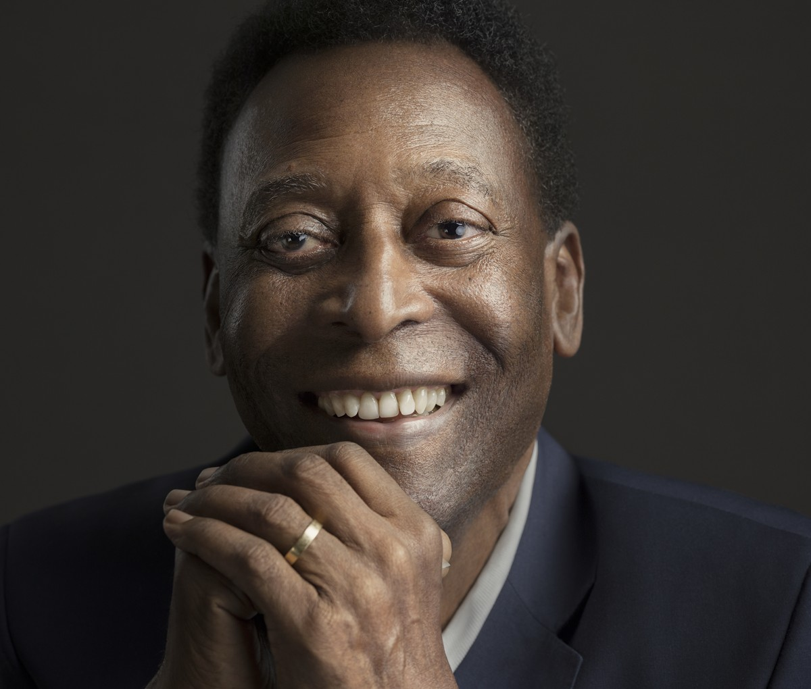
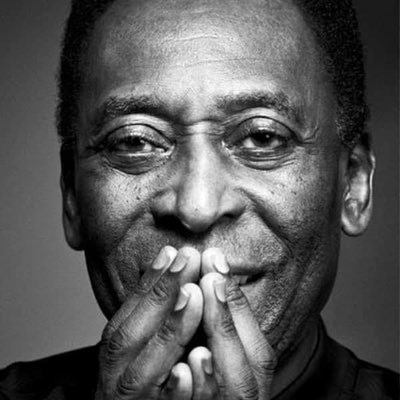

81 Anos
Sou Edson Arantes do Nascimento, mais conhecido como Pelé, é um ex-futebolista brasileiro que atuava coco atacante. Ele é amplamente cosiderado como um dos maiores atletas de todo os tempos.
Fabiana: Muuito lindo
Henrique: TOP
Matheus: #MELHORJOGADOR
 
Marcela: Amooooooooooooooo, maravilhoso o lugar
Fabricio: Ja fui, é imprecionante de lindo
Rosana: Muito lindo o lugar, amei